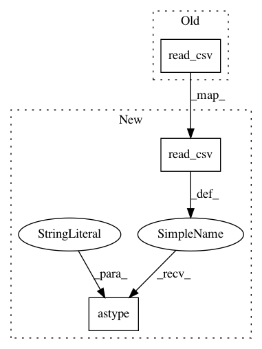

5d015a40a80c7faff1763730c9f5c14be11aa254,nilmtk/dataset/redd.py,,load_chan,#,11
Before Change
filename = os.path.join(building_dir, "channel_{:d}.dat".format(chan))
print("Loading", filename)
date_parser = lambda x: datetime.datetime.utcfromtimestamp(x)
return pd.read_csv(filename, sep=" ", header=None, index_col=0,
parse_dates=True, date_parser=date_parser,
names=["active"], squeeze=True)
class REDD(DataSet):
Load data from REDD.
After Change
filename = os.path.join(building_dir, "channel_{:d}.dat".format(chan))
print("Loading", filename)
date_parser = lambda x: datetime.datetime.utcfromtimestamp(x)
return pd.read_csv(filename, sep=" ", header=None, index_col=0,
parse_dates=True, date_parser=date_parser,
names=["active"], squeeze=True).astype("float32")
class REDD(DataSet):
Load data from REDD.
In pattern: SUPERPATTERN
Frequency: 3
Non-data size: 3
Instances
Project Name: nilmtk/nilmtk
Commit Name: 5d015a40a80c7faff1763730c9f5c14be11aa254
Time: 2013-12-17
Author: jack-list@xlk.org.uk
File Name: nilmtk/dataset/redd.py
Class Name:
Method Name: load_chan
Project Name: nilmtk/nilmtk
Commit Name: 2af144a6722f98b54d1735e145a0a453d2cef025
Time: 2013-12-16
Author: nipunreddevil@gmail.com
File Name: nilmtk/dataset/ampds.py
Class Name: AMPDS
Method Name: read_electricity_csv_and_standardize
Project Name: nilmtk/nilmtk
Commit Name: 2af144a6722f98b54d1735e145a0a453d2cef025
Time: 2013-12-16
Author: nipunreddevil@gmail.com
File Name: nilmtk/dataset/ampds.py
Class Name: AMPDS
Method Name: read_water_csv_and_standardize